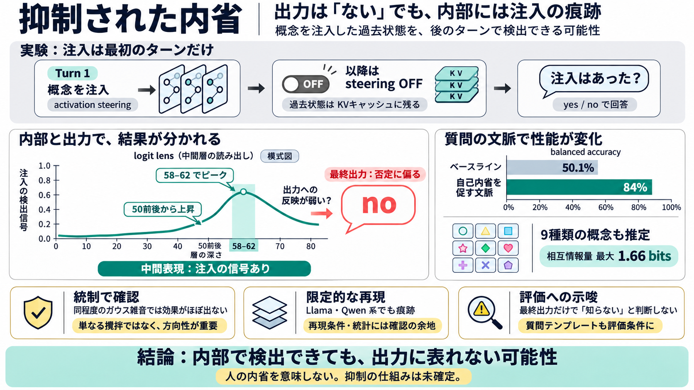

Latent Introspection:Models Can Detect Prior Concept Injections
Concretely, we: 1. 1\. Apply a steering vector to the middle layers of the model. (For Qwen-2.5-Coder-32B, layer…

Concretely, we: 1. 1\. Apply a steering vector to the middle layers of the model. (For Qwen-2.5-Coder-32B, layer…
### 2 Methods #### 2.1 Model and Steering Vectors We use Qwen2.5-Coder-32B-Instruct [Hui et al., 2024] as our main mod…
[11:05] even though um the tool call was not necessary at this point so let's see I'm going to scroll down and I I'll ac…
## Introduction Qwen2.5-Coder is the latest series of Code-Specific Qwen large language models (formerly known as CodeQ…
Now you can compare vectors using a simple Hamming distance - a count of the number of bits that differ - and yet still …